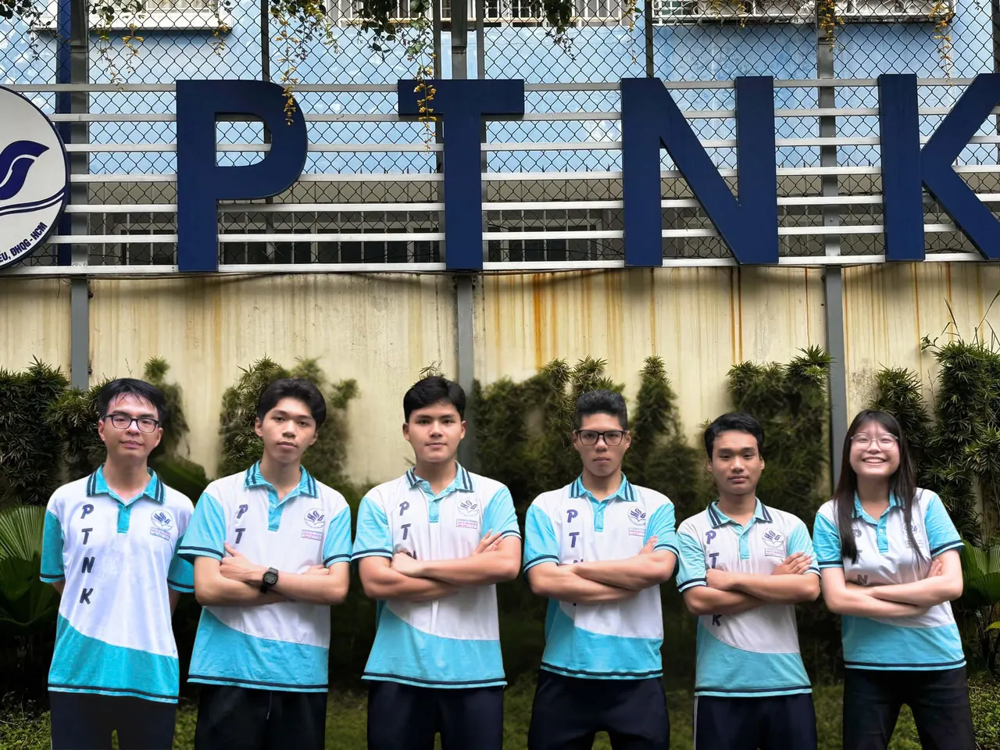
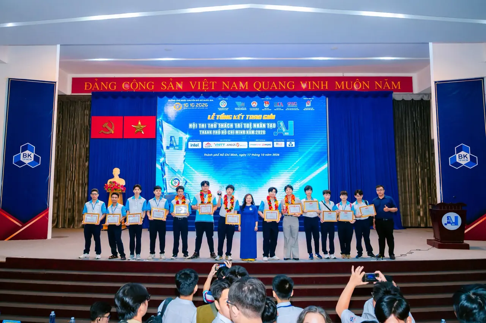
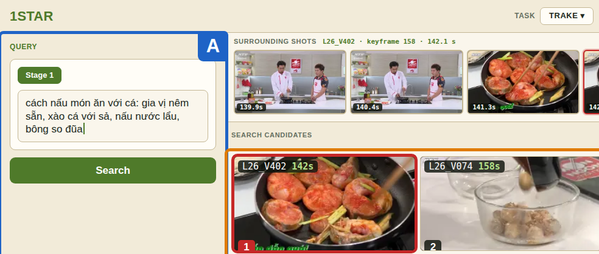
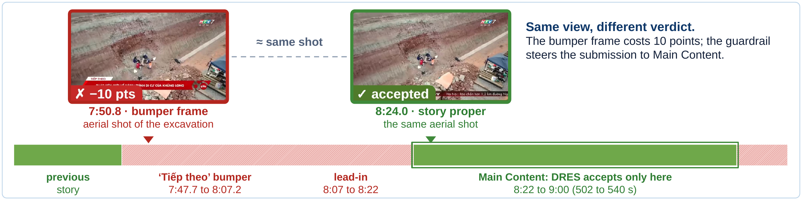
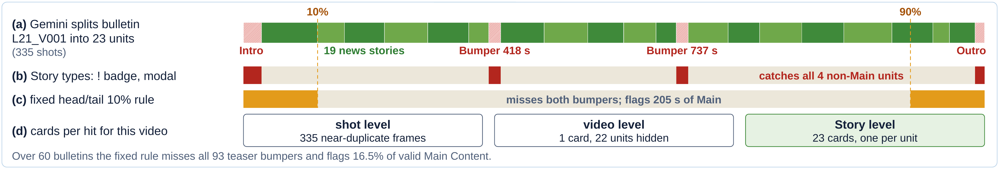
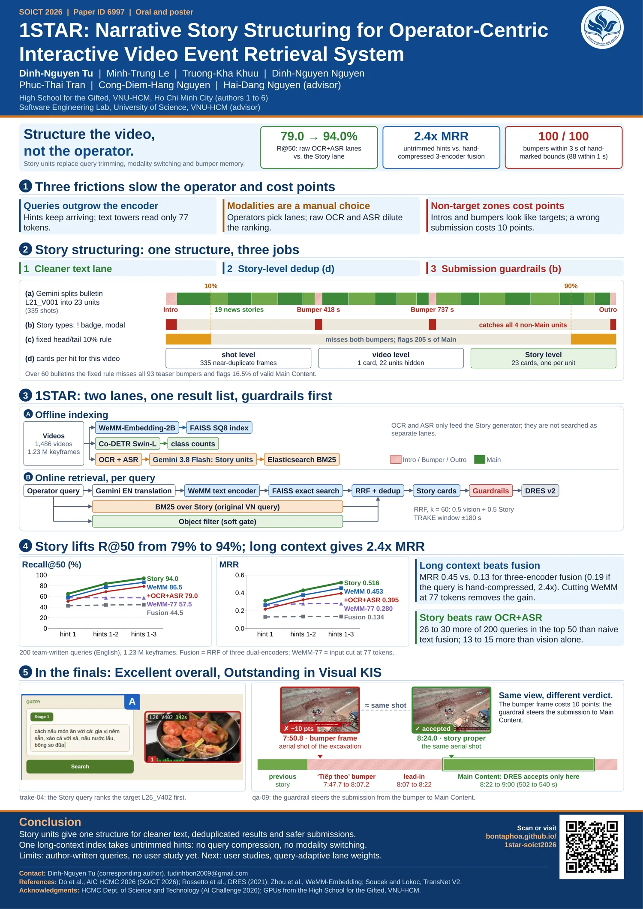

AI Challenge: the ceremony in numbers and prizes
The school's report: how big the competition was and which PTNK teams received prizes, with photos from the ceremony.
Read on ptnk.edu.vn (Vietnamese)AI Challenge HCMC 2026 · SOICT 2026
Structure the video, not the operator.
A retrieval system built by students of the High School for the Gifted (VNU-HCM) for the Ho Chi Minh City AI Challenge 2026, and the paper that followed it at SOICT 2026.
Our system, the finals and the award day. 1STAR received the Encouragement Prize.
See the competitionAccepted for oral and poster presentation, 4–5 December 2026, Ho Chi Minh City.
Read the paper
1STAR was built for the AI Challenge HCMC 2026. After the competition the team developed its entry into a full paper.
AI Challenge HCMC 2026 award ceremony at HCMUT. 1STAR receives the Encouragement Prize.
The school announces that two of its student papers, including the 1STAR paper, are accepted at SOICT 2026.
SOICT 2026 in Ho Chi Minh City. 1STAR will give the oral presentation and show the poster.
The Springer proceedings (CCIS) will carry the final version; its DOI will be added here.
Part 1 · The competition
The Ho Chi Minh City AI Challenge ran for more than four months and closed with an award ceremony on 17 October 2026. Teams build interactive systems that find moments in large video collections while a scoring server (DRES) judges every submission live.
teams entered
contestants from 198 organisations
high-school students from 95 schools, in their own board (Board B)
Organised by the Department of Science and Technology of Ho Chi Minh City with VNU-HCM, the Department of Education and Training, the City Youth Union and the City Computer Association. The organisers invite strong teams to present at a special session on lifelog and multimedia event retrieval at SOICT 2026. Official site.
In a run, a team's operator reads progressive clues about a hidden video moment and has a few minutes to find it. 1STAR lets the operator paste the clues untrimmed: one long-context model searches the pictures, and a language model organises every broadcast video into "Story" units that feed the text search, merge duplicate results and warn before an intro or a bumper is submitted.

Open full size · swipe sideways to see the whole figure
1STAR competed in the high-school board (Table B in the paper), which has its own prizes.
Giải Khuyến khích
Outstanding in Visual KIS; Excellent in Textual KIS, QA and TRAKE.

Three teams from the school were recognised: "5 chàng lính ngự lâm" (First Prize), 1STAR (Encouragement Prize) and "Gaussian" (Potential Prize). The papers of the first two teams were later accepted at SOICT 2026.


Ratings are the organizers' evaluation as reported in the paper; prizes are as announced by the school. This page does not reproduce cross-team leaderboards.
Part 2 · The paper
The 15th International Symposium on Information and Communication Technology takes place on 4–5 December 2026 in Ho Chi Minh City. Its proceedings appear in Springer's CCIS series. Conference site.
1 High School for the Gifted, Vietnam National University Ho Chi Minh City, Vietnam
2 Software Engineering Laboratory, Faculty of Information Technology, University of Science, Vietnam National University Ho Chi Minh City, Vietnam
This version of the contribution has been accepted for publication, after peer review (when applicable) but is not the Version of Record and does not reflect post-acceptance improvements, or any corrections. The Version of Record will be available online at http://dx.doi.org/[DOI to be added after publication]. Use of this Accepted Version is subject to the publisher's Accepted Manuscript terms of use. The manuscript has 14 pages plus a one-page publisher notice.
Recall@50 when raw OCR and ASR lanes are replaced by the Story lane (hints 1 to 3, 200 queries).
Untrimmed hints on one long-context index vs. a three-encoder fusion fed a hand-compressed query.
Hand-marked bumpers recovered with start and end errors summing to at most 3 s (88 within 1 s).
Interactive video event retrieval under time pressure burdens the operator as well as the engine: queries must be trimmed to fit the encoder, modalities switched on and off, and non-target segments remembered. We present 1STAR, automating these frictions by default while preserving operator control, in two ways. First, a narrative Story modality: Gemini 3.8 Flash structures Optical Character Recognition (OCR) and Automatic Speech Recognition (ASR) into Intro, Main, Bumper and Outro units, replacing noisy separate text lanes. Added to the visual index (WeMM-Embedding-2B), raw OCR and ASR lanes dilute ranking and lower Recall@50 (R@50) from 86.5% to 79.0%; the synthesized Story lane raises it to 94.0%. The same units drive Story-level deduplication and submission guardrails; on 100 hand-marked bumpers, start and end errors sum to at most 3 s (88 within 1 s). Second, this long-context embedding index accepts untrimmed hints in place of a rank fusion of three dual-encoders. On 200 team-written known-item queries (English translations) over 1.23M keyframes, untrimmed hints give Mean Reciprocal Rank (MRR) of 0.45 (R@50 86.5%), 2.4 times the 0.19 (58.0%) of the fusion fed a query an operator compressed by hand to fit its text towers. Truncating WeMM's input at 77 tokens removes the gain from added hints. In the Ho Chi Minh City AI Challenge 2026 finals, 1STAR received an Excellent overall performance rating from the organizers, securing Outstanding in Visual Known-Item Search alongside Excellent ratings in Textual Known-Item Search, Question Answering, and Temporal Retrieval and Alignment of Key Events.
Known-item hints keep arriving, but the text towers of dual-encoders read at most 77 tokens, so operators compress hints by hand.
Operators decide which lane to search, and raw OCR and ASR text dilutes the ranking.
Intros, bumpers and credits look like targets. Each wrong submission costs 10 points under DRES.

Open full size · swipe sideways to see the whole figure

Open full size · swipe sideways to see the whole figure

The school covered both milestones on its website and on Facebook. These pages are in Vietnamese.
The school's report: how big the competition was and which PTNK teams received prizes, with photos from the ceremony.
Read on ptnk.edu.vn (Vietnamese)The school's article on the 1STAR paper and a second PTNK paper, with the team photos and a short interview with the 1STAR first author.
Read on ptnk.edu.vn (Vietnamese)The school's post about the ceremony, with the group photo of the PTNK teams.
Open the Facebook post (Vietnamese)The school's post announcing the two accepted papers.
Open the Facebook post (Vietnamese)Asked about the project, the first author, Dinh-Nguyen Tu, made these points (summarised here from the Vietnamese original):
Full interview in the school's article (Vietnamese).
Roles as credited on the AI Challenge HCMC 2026 poster. The students are from the High School for the Gifted, VNU-HCM; the advisor is from the Software Engineering Laboratory, University of Science, VNU-HCM.
The accepted manuscript is above; the Version of Record will be linked here once the SOICT 2026 proceedings (Springer CCIS) are published.
@inproceedings{tu2026_1star,
title = {{1STAR}: Narrative Story Structuring for Operator-Centric
Interactive Video Event Retrieval System},
author = {Tu, Dinh-Nguyen and Le, Minh-Trung and Khuu, Truong-Kha and
Nguyen, Dinh-Nguyen and Tran, Phuc-Thai and
Nguyen, Cong-Diem-Hang and Nguyen, Hai-Dang},
booktitle = {Proceedings of the 15th International Symposium on
Information and Communication Technology ({SOICT} 2026)},
publisher = {Springer Nature},
year = {2026},
note = {DOI to be added after publication}
}
Questions about the paper, the competition or the posters: please open an issue or contact the corresponding author listed in the paper.